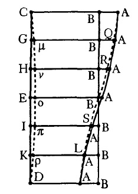

Now I shall prepare myself for finding a fourth way to the equation, to be computed not through an arbitrary hypothesis but from the very nature of things. (p. 371)
Chapter 40
“Since, therefore, the times of a planet over equal parts of the eccentric are to one another as the distances of those parts, and since the individual parts of the entire semi circle of the eccentric are all at different distances, it was no easy task I set myself when I sought how to find the sum of all the individual distances (and they are infinite in number) we cannot say how much time has elapsed for any one of them. Thus the equation will not be known. For the whole sum of the distances is to the whole periodic time as any partial sum of the distances is to its corresponding time.”
For Kepler to add up all of the distances was “mechanical and tedious” so he realizes that all of the individual distances are contained in the plane or area of the circle. He then works to find the proportional relationship between the arc [the planet's path on the orbit] to the area swept out by the planet [distance from the sun or eccentric].
As the area CDE is to the arc CED that encloses it,
So is the area CBG to the arc CG [red],
Therefore the arc CED is to the arc CG,
As is the area CDE to the area CBG.
The total area of the semicircle is to its total arc, as the smaller arc is to its enclosed area.
Kepler sees that all of the lines from A are contained within the semicircle CDE as well. He considers this to be a key insight into finding the solution: “those from A are the very distances whose sums are sought…I could conclude that by computing the area CAH [or CAG below] I would have the sum of the infinite distances in CH [or CG below], not because the infinite can be traversed, but because I thought that the measure of the faculty by which the collected distances mete out the times is contained in this area, so that we would be able to obtain it by knowing the area without an enumeration of least parts [i.e. the infinite distances from C to E].”
Here is a walkthrough of how Kepler tackles the problem of finding the area of CAG:
CGB is the measure of the eccentric anomaly. The optical equation is the angle BGA, and the physical equation is the area BGA. The area of triangle BGA is the excess of the mean anomaly over the eccentric anomaly and the angle BGA is the excess of the eccentric anomaly CBG over the equated anomaly CAG.
“Thus the knowledge of this one triangle [BAG] provides both parts of the equation corresponding to the equated anomaly GAC.”
So if Kepler can find the area of this one triangle he can have a way to measure the time a planet has traversed over an orbit since the mean anomaly is the measure of the time.
Here is how he finds the value for the area of that triangle:“...as GM is to HL, altitude to altitude, so is area GAB to area HAB. Q.E.D.”-p 421
Kepler uses this proof to investigate the area of triangle BEA, the triangle at 90 degrees will give you what is called the whole sine. Kepler obtains the value for the sine of this angle then, as we established above, that the whole sine is proportional to the sines of the other triangles in the circle. So he can know the value of the area of these triangles.
This is his 4th way to get the value of the equations “to be computed from the very nature of things.” He uses this procedure in the rest of the New Astronomy.
There is a Problem with this method of taking the areas in this way though. Kepler lays all the lengths out for both the circular sector [those from B to the circumference] and on top of them, those lengths from the Sun [A to the points on the circumference].
If you take all the distances from B (i.e. BC, BG, BH…) and add them up you get the sum of 36,000,000 BUT if you do the same for A taking all the lengths [i.e. AC, AG, AH…] it comes out to be greater than 36,000,000! But aren’t they measuring out the same area? (namely CDE)
Here is a diagram of why that is the case.As you can see the lengths from A are longer than those from B. When you add them all up they will come out greater than the total of the lines from B: the radial lines of the circle.
You get the opposite result if you do it the other way.
Take A as the point around which the equal angles will be created. When you connect the lines from B to those lengths you find that those from A are actually less than then those of B. Therefore the area of the lengths from A in this case will be less then the area of the circle.
Kepler creates a conchoid as a way represent the area of the circle and measure the area of the lengths from A against it.
Here is an animation of how Kepler created the conchoid.
(note: The area of the rectangular area is equal to the area of the circle which Kepler states as 36,000,000. If you take any section of the rectangle, say CBBG, it will be twice the area of the circular sector CBG.)
Here are some illustrations of why the triangles drawn from A create such a problem:
Here, on the left, is Archimedes' construction for the area of the circle. You can see, in Kepler’s construction on the right, how great the angular difference is between the triangles hitting the circumference obliquely versus Archimedes’ construction which is a series of equal triangles with right angles.
Kepler does find a way to create a geometrical figure which can represent the lengths from A as the total area of the circle in "conchoid"-like form. This is an important method which is used numerous times in the following chapters.
The lengths HR and GQ, shown here, are created by extending the line from G through B (the centre of the circle) and dropping a perpendicular from A onto that line. Also note: that if you add the length HR and RV you get a length that is equal to the diameter of the circle; repeating this process will give you a series of lengths that, when added up, will give you an area equal to that of the circle.

Here you can see the lengths GQ, HR, etc. and the difference between them and the lengths from the original conchoid. The one is AQRBSLA and the larger is AAAAAA. Kepler states that the area between them “is the measure of the excesses of the distances from A over the distances from B...”
Kepler lays down a problem for future geometers: “I call upon them to find me some plane figure that is equal to the sum of the distances.... let them show me how to express numerically what I have delineated geometrically; that is, let them show how to square the figure I have found”.
| Next |